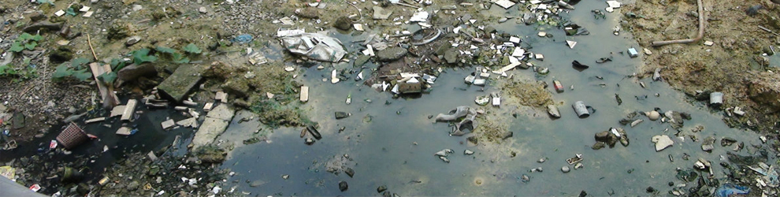

- 

- 1
- 2
- 3
环境保护
联系我们
环境保护是指人类为解决现实的或潜在的环境问题，协调人类与环境的关系，保障经济社会的持续发展而采取的各种行动的总称。
其方法和手段有工程技术的、行政管理的，也有法律的、经济的、宣传教育的等。
保护环境是人类有意识地保护自然资源并使其得到合理的利用，防止自然环境受到污染和破坏;对受到污染和破坏的环境做好综合的治理，以创造出适合于人类生活、工作的环境，协调人与自然的关系，让人们做到与自然和谐相处的概念。
我国环境状况
1、大气污染属煤烟型污染，以尘和酸雨危害最大，污染程度在加剧。
2、酸雨主要分布在长江以南、青藏高原以东地区及四川盆地。华中地区酸雨污染最重。
3、江河湖库水域普遍受到不同程度的污染，除部分内陆河流和大型水库外，污染成加重趋势，工业发达城镇附近的水域污染尤为突出。
4、七大水系（珠江、长江、黄河、淮河、海滦河、辽河、松花江）中，黄河流域、松花江、辽河流域水污染严重。
5、大淡水湖泊总磷、总氮污染面广，富营养化严重。
6、四大海区以渤海和东海污染较重，南海较轻。
7、渔业水域生态环境恶化的状况没有根本改变，并呈加重趋势。
8、城市环境污染呈加重趋势。
9、城市地面水污染普遍严重，呈恶化趋势。绝大多数河流均受到不同程度污染。
10、全国2/3的河流和1000多万公顷农田被污染。
折叠 中国环境保护面临的问题
我国的环境问题主要表现在：污染物排放量还相保护环境当大，远远高于环境的自净力；工业污染治理任务仍相当繁重，有些经过治理的地方又出现反复，城镇生活污染比重明显增加；不少地区农业水质，土质污染日渐突出，有些地方的农副产品有害残留物超标，影响人体健康和产品出口；部分地区水土流失，荒漠化仍在加剧，等等。从总体上看，我国生态环境恶化的趋势已初步得到遏制，部分地区有所改善，但目前我国环境形势仍然相当严峻，不容乐观。严峻的环境形势迫使我们必须做出选择：是持续发展还是自我毁灭。毫无疑问，我们应当刻不容缓地采取有效措施，防治环境污染与破坏。否则，日益恶化的环境将使我们在其他领域中所取得的一切成就黯然失色。因此，在推进现代化建设中，我们在保持国民经济持续较快增长的同时，必须把环境保护放在突出的位置。我们应该认识到：保护和改善环境也是保护和发展生产力。